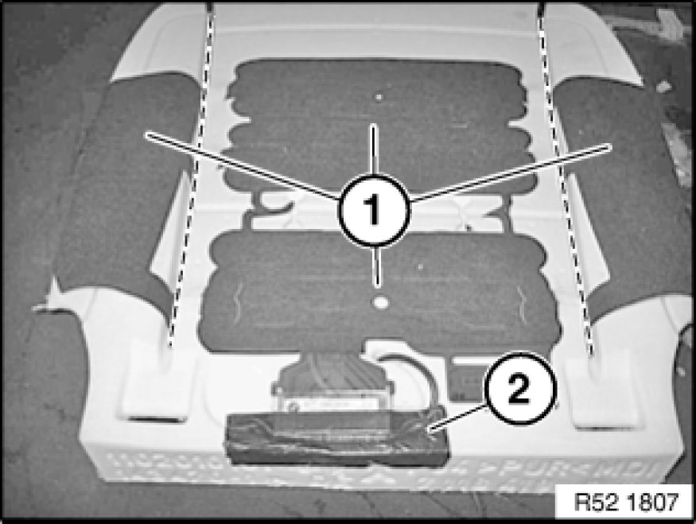
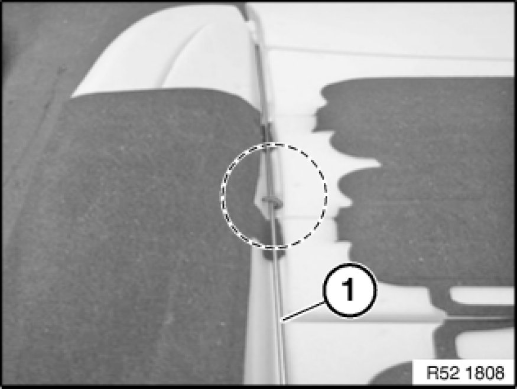
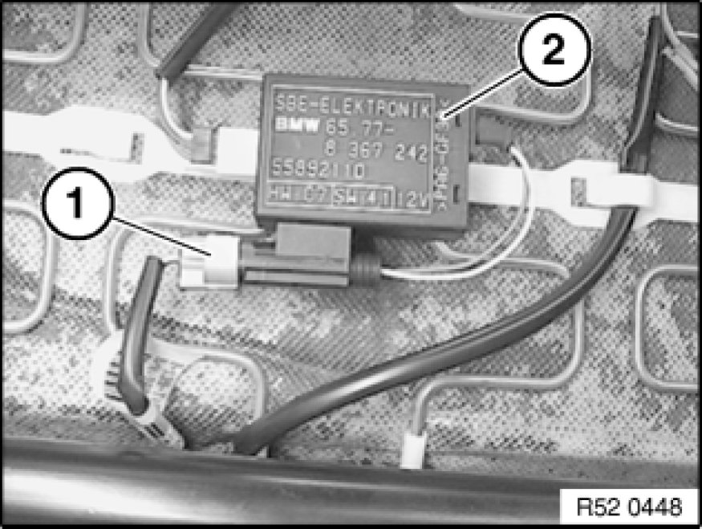
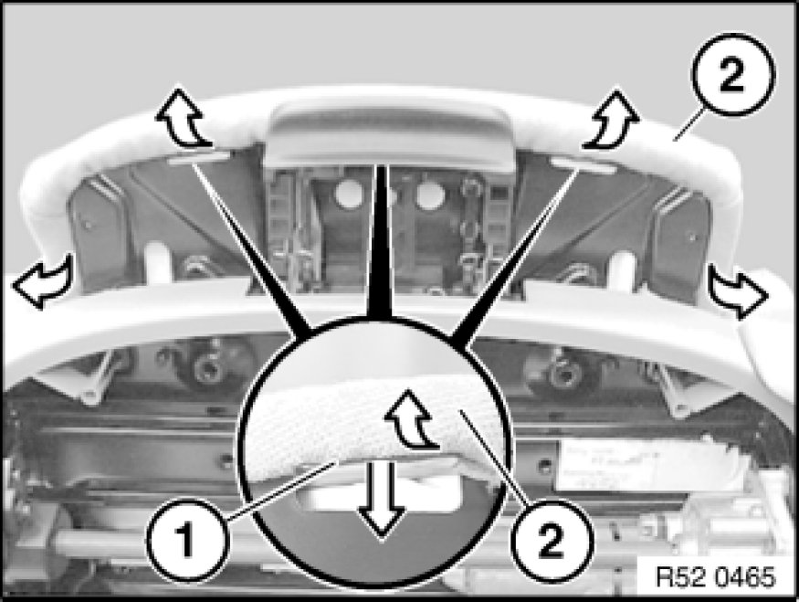
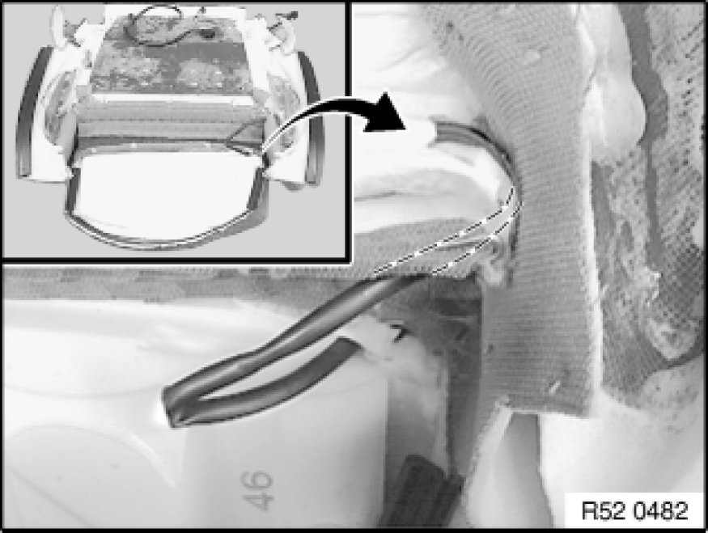

Replacing Seat Cover for Left or Right Front Seat (Sports/Electric)
52 16 400 - Replacing seat cover for left or right front seat (sports/electric)

Special tools required:
- 52 0 050 52 0 050 Pliers

Necessary preliminary tasks:
- Remove front seat Front Seat, Sports, Electric
- Remove outer cover with actuating unit Removing and Installing/Replacing Outer Covers on Left or Right Front Seat (Sports/Electric)
- Remove inner cover Removing and Installing/Replacing Inner Cover on Front Left or Right Seat (Sports/Electric)
- Remove backrest frame Removing and Installing/Replacing Backrest Frame on Left or Right Front Seat (Sports/Electric) with cover and padding

Warning!
US/CDN front passenger seat (with OC3 mat) only:
To avoid damaging the OC3 mat, it is essential to carry out the following operations with extra care.
When replacing seat cover:
If seat cover is defective, seat cover and padding with OC3 mat must be replaced together.
New seat cover is supplied with padding, OC3 mat and if necessary seat heating.
When replacing padding or OC3 mat:
If OC3 mat or padding is defective, both parts must be replaced together.
These must be fitted with the seat cover from the car.

Important!
The OC3 mat must be enabled after each installation operation.
Enabling seat occupancy detector (OC3 mat):
- Connect BMW diagnosis system
- Release seat occupancy detector
- Clear fault memory if necessary

Only when replacing OC3 mat with padding:
OC3 mat (1) is secured on the left and right sides in the marked area with a longitudinal trim wire for transportation.
Carefully remove adhesive tape (2).

Removing transportation lock:
Carefully release retainers in marked area on left and right from longitudinal trim wires (1).
Important!
Remove all remainders of retainers from padding and OC3 mat.
Version with seat heating:
If necessary, disconnect plug connection (1).
Release cable strap (2).
Detach cable (3) from holder (4).
Detach cable (1) from holder (2).
Release screw (1) on inside/outside.
Unclip clips (3) towards bottom and pull trim (2) out a little.

Release screws (1).
Pull trim (2) out a little and release screw (3).
Release clip (5) from carrier (4).
Remove trim (2) and carrier (4).

Installation:
Cable holders (1) on carrier (2) must not be damaged.
Installation:
Clips (1) on sports seat trim (2) must not be damaged.

Note:
The operation "Removing holder for actuation" ends here.

Version with seat occupancy detector:
If necessary, disconnect plug connection (1) from control unit (2).
Version with seat heating:
If necessary, release locks (1) and detach plug housing (2).

If necessary, press lock (1) downwards and detach cover (2).
Disconnect plug connection (1) for seat heating from plug housing (2).
Pull cable (1) out of holders (2).

Detach seat cover (1) from seat frame (2).
Pull out cover welt (1) completely from seat frame (2).
Fold in ends (1) on seat cover and push through under backrest (2) towards front.

Unfasten thigh support and pull completely towards front.
Bend open retaining plates (1) and remove cover piping (2).

Note:
Cushion (1) is secured at front with double-sided adhesive tape (3) to carrier (2).
Pull cushion (1) towards top off carrier (2).

Lever trim wire (1) out of mounts (2).
Installation:
Stick new double-sided adhesive tape (4) to carrier (3) or attach mount with spray adhesive.
Model without seat heating and without seat occupancy detector:
Remove seat cover (1) with thigh support (2) towards front/top.

Model with seat heating and/or with seat occupancy detector:
Pull seat cover (1) forward a little and feed cable (2) out.
Remove seat cover (1) with thigh support towards front/top.
Note:
The operation "Removing complete seat cushion" ends here.
Replacing padding or sensor mat:
Release clips (1) and (2) at rear left/right from support (3).
Release all clips (1) on left/right and center (2) from support (3).

Version with seat heating:
Installation:
Note routing of seat heater cable (1).
Do not damage with clips.
Detach all retainers in side area from longitudinal wires (1).
Pull trim wires (1) forward out of seat cover.
Carefully fold back seat cover and release retainers from cross-wires (2).
Remove seat cover from padding.
Important!
Remove all remnants of clips from seat cover and padding.
Remove padding (1) from seat cover (2).
Version with seat heating:
Installation:
If necessary, detach heating mat (1) from adhesive tape (2) of thigh support.
3 - Seat heater cable
Stick double-sided adhesive tape (2) to support (1) or coat with spray adhesive.
Version with seat heater and/or with seat occupancy detector:
Installation:
Feed seat heater cable (1) through bore hole (3).
Feed seat heater cable (2) through bore hole (4).

Installation:
Bend new clips (2) with special tool 52 0 050 52 0 050 Pliers.
1. Padding
2. Retainer
3. Trim wire in padding
4. Trim wire in cover
5. Seat cover
Installation:
Support (2) must be coated with wax (1) to prevent grinding noises.
Do not remove wax (1) on padding (2).
Passenger seat only (replacing sensor mat):
Installation:
In order to guarantee the function and fastening (adhesive strength) at the sticking surfaces of sensor mat (1), the foam most not show any traces of damage at all!
Replace the foam if it is hardened or damaged particularly in the area of the sticking surfaces.
Lay sensor mat connection without creasing into groove on support.
Fit new sensor mat (1) for passenger seat occupancy detector.
Align new sensor mat (1) on foam (2).
Feed plug (3) through bore hole (4).

Installation:
Detach liner (1) at individual points and stick sensor mat (2) onto foam (3).
Note:
The operation "Replacing support or sensor mat" ends here.
Replacing seat cover:
Remove trim threads (1) from seat cover (2).
Cut new seat cover (2) to size and insert trim threads (1).
3 - Seat heater cable